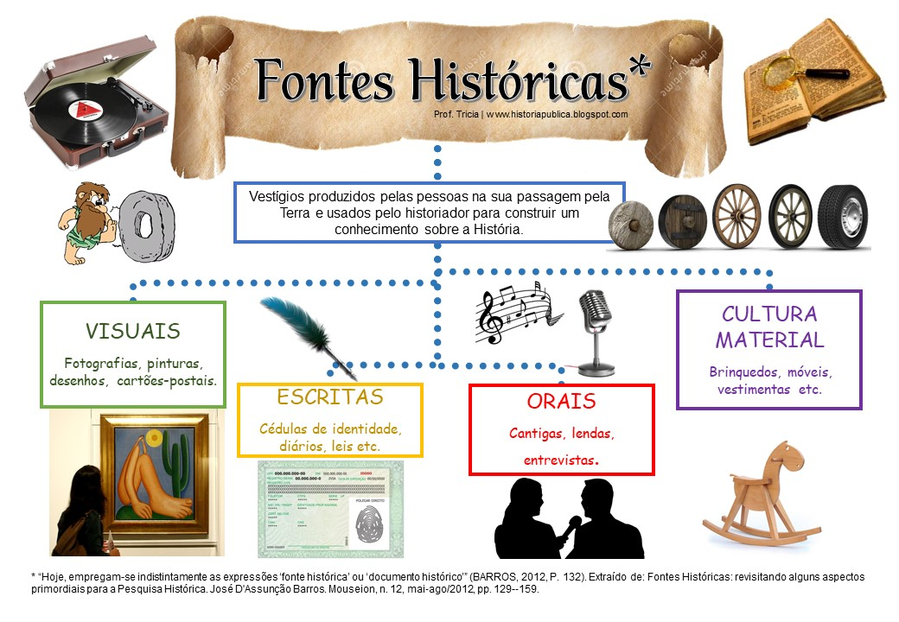

As fontes históricas são todos os vestígios deixados pelos seres humanos ao longo do tempo que permitem ao historiador investigar, reconstruir e compreender as sociedades do passado. Durante muito tempo, a historiografia tradicional (sobretudo no século XIX) restringia o conceito de fonte quase que exclusivamente aos documentos escritos oficiais produzidos por elites e estados.Com a renovação historiográfica liderada pela Escola dos Annales no século XX, o conceito de fonte sofreu uma revolução profunda. Passou-se a entender que qualquer elemento produzido, modificado ou utilizado pela ação humana pode servir de documento histórico, ampliando imensamente o leque de investigações.
Para fins didáticos e metodológicos, costuma-se classificar as fontes históricas em diferentes categorias, embora na prática da pesquisa elas se cruzem constantemente:
🔍 A Neutralidade e a Intencionalidade: É fundamental destacar que nenhuma fonte é neutra. Todo documento histórico carrega as marcas, os interesses, os preconceitos e a visão de mundo de quem o produziu. O papel do historiador não é aceitar a fonte como uma "verdade absoluta", mas interrogá-la criticamente.
Até o século XIX, a pesquisa histórica esteve fortemente atrelada aos documentos oficiais escritos, guardados em arquivos estatais e eclesiásticos, o que conferia à história o status de uma narrativa voltada primordialmente para os grandes feitos políticos das elites. Contudo, ao longo do século XX, com o advento de novas correntes historiográficas, essa perspectiva foi superada.
A ampliação do conceito de fonte histórica a partir do século XX permitiu aos pesquisadores:
Resolução: A ampliação do conceito de fonte histórica incluiu culturas materiais, orais e iconográficas, possibilitando resgatar a história de sujeitos antes ignorados pelas fontes tradicionais (como camponeses, escravizados, mulheres e operários).
“O documento não é inocente. O primeiro cuidado do historiador é não o consumir passivamente, aceitando o que ele diz como um reflexo direto da realidade. Todo documento é o resultado de uma montagem, consciente ou inconsciente, da sociedade que o produziu e dos interesses daqueles que o legaram à posteridade.”
O texto aponta para uma premissa metodológica essencial no ofício do historiador contemporâneo, que consiste em:
Resolução: O fragmento destaca a importância da crítica documental. A fonte histórica não é um espelho neutro da realidade, mas um artefato cultural impregnado de intencionalidades que deve ser questionado pelo historiador.